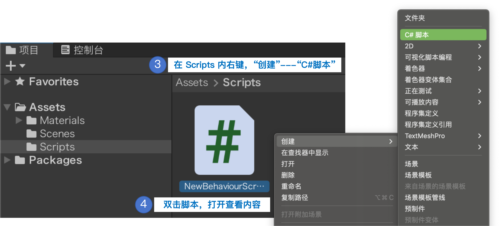
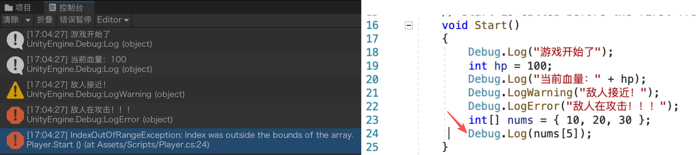

C# 核心语法（Unity 语境）
方法的定义与调用
先按下面的流程在 Unity 工程里新建一个脚本：
- 在 Project 窗口
Assets下新建文件夹Scripts - 右键
Scripts→Create（创建）→C# Script（C# 脚本） - 双击脚本，自动启动 Visual Studio 编写代码


新建好的脚本长这样——Unity 自动生成骨架，你写的每个方法，都要写在这个类的大括号里：
public class NewBehaviourScript : MonoBehaviour
{
void Start() { } // Unity 自动调用
void Update() { } // Unity 自动调用
}
方法 = 一段可复用的功能，把「输入参数 → 处理 → 输出结果」打包在一起。格式：
public class NewBehaviourScript : MonoBehaviour
{
// 方法 = 一段可复用的功能：输入参数 → 处理 → 输出结果
// a、b：要相加的两个数
public int Add(int a, int b)
{
return a + b;
}
void Start()
{
int r = Add(3, 5); // 调用，r = 8
}
}拿上面 NewBehaviourScript 类里的 Add 方法拆开看，一个方法由五部分组成：
public int Add (int a, int b) { return a + b; }
↑ ↑ ↑ ↑ ↑
访问修饰符 返回类型 方法名 参数列表（输入） 方法体（做什么）public= 公开的——谁都能调用（还有private等，后面「字段可见性」再讲）- 返回类型——方法执行完把什么类型的数据还给调用者。
int还整数、float还小数、void表示「不返还东西」 (int a, int b)= 参数列表——调用时传进来的数据，在方法内当局部变量用{ return a + b; }= 方法体——真正干活的代码
访问修饰符 返回类型 方法名(参数列表) { 方法体 }void 与有返回值的区别
public class NewBehaviourScript : MonoBehaviour
{
// a、b：要相加的两个数
public int Add(int a, int b)
{
return a + b;
}
// a、b：要相加的两个数（这个只打印，不返回）
void PrintSum(int a, int b)
{
Debug.Log(a + b);
}
void Start()
{
// Add 有 int 返回值 → 可以接住，可以继续参与运算
int sum = Add(3, 5);
Debug.Log(sum + 10); // 18
// PrintSum 是 void → 没有返回值，没法"接"
PrintSum(3, 5); // 只能让它直接执行
// int x = PrintSum(3, 5); // ❌ 编译错误！void 方法不能被赋值
}
}四种常见组合
| 组合 | 语法 | 示例 |
|---|---|---|
| 有参有返 | 类型 方法(参数) { return 值; } | int Add(int a, int b) |
| 有参无返 | void 方法(参数) { } | void PrintSum(int a, int b) |
| 无参有返 | 类型 方法() { return 值; } | float GetSpeed() |
| 无参无返 | void 方法() { } | void Start() |
Start()、Update() 都是 Unity 帮你调用的方法（生命周期方法）；你自己写的方法，就在它们里面被调用。把重复逻辑抽成方法，代码更干净、更好改。Debug.Log 打印日志 — 你的调试眼睛
写 Unity 脚本时，想知道某个变量现在是多少、某段代码到底有没有执行，最常用的方法就是打印日志。
Unity 里用 Debug.Log("内容") 把信息打印到 控制台（Console）窗口——打开方式：菜单 Window（窗口）→ 面板 → Console（控制台）。运行游戏后就能看到，它是排查问题最基本的手段。

基本写法
using UnityEngine;
public class NewBehaviourScript : MonoBehaviour
{
void Start()
{
Debug.Log("游戏开始了");
int hp = 100;
Debug.Log("当前血量：" + hp); // 输出：当前血量：100
}
}Debug.Log 只在运行模式（Play）下执行：它写在 Start() / Update() 里，点 ▶ 运行游戏后才会输出；编辑器不运行时不会打印，别以为代码没生效。另外，脚本要把 .cs 文件挂到场景里的游戏对象上，
Start() 才会被 Unity 自动调用——没挂载，日志自然不会出来。输出带变量
用加号拼接或字符串插值把变量塞进日志：
string name = "玩家";
int lv = 5;
Debug.Log("欢迎，" + name + "，等级 " + lv); // 加号拼接
Debug.Log($"欢迎，{name}，等级 {lv}"); // 字符串插值（推荐）三种日志级别
除了普通日志，还有两个"带颜色"的兄弟，在控制台里一眼区分严重程度：
| 写法 | 控制台颜色 | 什么时候用 |
|---|---|---|
Debug.Log() | 白色 / 普通 | 普通信息、查看数值 |
Debug.LogWarning() | 黄色 | 不致命但需注意（数值越界、资源缺失） |
Debug.LogError() | 红色 | 明确出错了（找不到对象、空引用） |

在哪看 / 一个坑
点击 ▶ 运行游戏后，在控制台双击某条报错日志，就能直接跳到对应的代码行——定位 bug 非常方便。
下面这段代码编译完全没问题（没有红色波浪线），但一运行就报错：
using UnityEngine;
public class NewBehaviourScript : MonoBehaviour
{
void Start()
{
int[] nums = { 10, 20, 30 };
// 编译通过：语法完全正确
Debug.Log(nums[5]); // ❌ 运行时报错 IndexOutOfRangeException
}
}运行时控制台会弹出红色报错（IndexOutOfRangeException），还标了出错的那一行；双击这条红色报错，Unity 会自动把你带到出错的代码行。这就是 Debug.Log 和报错日志帮你抓 bug 的方式。

字段可见性 — public / private / SerializeField
定义在方法体外面的变量叫成员变量（也叫字段）。它属于整个脚本，脚本里所有方法都能用。
为什么要区分可见性？（封装）
一句话：把数据藏起来，只通过你允许的方式访问。如果字段全是 public，外部代码能随意乱改，很容易写出 s.hp = -5 这种非法状态：
// 不封装的坑
player.hp = -5; // 血量-5？没人拦，游戏直接出 bug
player.score = 9999; // 9999 分？同样放行成员变量前面加什么修饰符，决定了它在 Unity 里的可见性：
| 写法 | 叫什么 | Inspector 面板 | 什么时候用 |
|---|---|---|---|
public | 公有变量 | 显示，可随时改 | 要被别的脚本访问，或想随时调数值 |
private | 私有变量 | 不显示 | 只在脚本内部用，防止外部误改 |
[SerializeField] + private | 私有但可序列化 | 显示，可改 | 又要安全、又想在面板上调（推荐） |
public float speed = 5f; // 公有变量：Inspector 显示可调
private int hp = 100; // 私有变量：不显示，只能类内用
[SerializeField] // 私有但 Inspector 也显示（推荐）
private float jumpForce = 3f;
public Transform pubTrans; // 公有组件：Inspector 可拖入其他对象
private Transform priTrans; // 私有组件：Inspector 不可见推荐：能private就 private（防止外部误改），想让 Inspector 显示就加 [SerializeField]——既安全又可调。

进阶：属性（Property）— 带保安的字段
有时你想"外部能读、但只有我自己能改"，或"写入时要检查合法性"。C# 的属性（Property）外表像字段、内部有逻辑，用 get/set 包裹读写逻辑：
get / set 是什么？
get：读取属性时执行，决定外部拿到什么值（读保护）set：写入属性时执行，决定能不能改、改成什么，可在里面加合法性检查（写保护）{ get; set; }读写都公开；{ get; private set; }外部只读、仅类内部能改
⚠️ Unity 里属性不显示！ 检视视图只序列化字段（field），不认属性（property）。写成 { get; set; } 的纯属性在检视视图里看不到。要"既在面板显示、又用属性控制访问"，得用带 [SerializeField] 的私有字段做底，再用属性包一层（见下例）。
[SerializeField] private int hp = 100; // 私有字段：显示在 Inspector（可改、可拖）
public int Hp // 属性：外部只读，类内可改
{
get { return hp; }
private set { hp = Mathf.Max(0, value); } // 写入检查：血量不低于 0
}
// 外部只能读 Hp；要改只能调类内部方法（如受伤）→ 杜绝 hp = -5
void TakeDamage(int d) { Hp -= d; }[SerializeField] 让私有字段在 Inspector 显示就够用了；属性适合"读写要带逻辑 / 想限制访问"的场合（如血量、金币）。下节课写第一个脚本，Inspector 里看到的是带 [SerializeField] 的私有字段；属性本身不显示，它只是代码里受控访问的"保安"。类型转换与枚举
类型转换 — 隐式（自动）
小范围 → 大范围，编译器自动完成，安全：整数可以自动变小数，反过来不行。
int a = 100;
double b = a; // int → double，b = 100.0
float c = a; // int → float
// double d = 3.14; int e = d; // ❌ 大转小不能自动，必须强转类型转换 — 显式（强制）
大范围 → 小范围要手动写 (目标类型)，截断不是四舍五入：
double pi = 3.14159;
int x = (int)pi; // x = 3，小数部分直接丢掉
int n = (int)9.99; // n = 9，不是 10两种方式怎么选？
记住一个判断标准：
| 方式 | 谁来做 | 什么时候用 |
|---|---|---|
| 隐式（自动） | 编译器 | 小范围 → 大范围，不会丢数据 |
| 显式（强转） | 你自己写 (类型) | 大范围 → 小范围，或 string ↔ 数字 |
一句话：整数可以自动变小数，小数不能自动变整数。
⚠️ 强转会丢数据：溢出
目标类型装不下时，高位直接被丢弃，结果完全不可信：
int b = 298;
byte a = (byte)b;
// b = 298（int 占 4 字节）
// a = 42 （byte 只取最低 1 字节，高位被丢掉！）byte 上限是 255，298 超出范围——强转前先确认目标类型装得下，否则结果不可信。数字 ↔ 文字
数字 → 文字用 ToString()（UI 显示分数）；文字 → 数字用 int.Parse() / float.Parse()（解析输入）。
int score = 95;
string s = score.ToString(); // "95"，给 UI 显示
int n = int.Parse("123"); // 123，从输入解析
float f = float.Parse("3.14");⚠️ Parse 遇到非法字符串会直接报错崩溃。解析用户输入 / 存档时建议用 TryParse——转换失败不会崩，而是返回 false：
// TryParse：成功 out 出结果，失败返回 false（不会崩）
if (int.TryParse(input, out int value)) {
Debug.Log("解析成功：" + value);
} else {
Debug.Log("输入的不是合法数字");
}枚举 enum
给一组常量取名字，变量只能从中选一个——适合表示游戏状态。枚举底层就是整数（从 0 开始递增）：
enum GameState { Menu, Playing, Paused, Over }
// 0 1 2 3
GameState state = GameState.Playing;
int n = (int)state; // 1，枚举 → int
state = (GameState)2; // Paused，int → 枚举可以给枚举指定具体数值
默认从 0 递增，但你也能手动赋值——适合表示有固定编码的含义（如 HTTP 状态码）：
enum HttpStatus
{
OK = 200,
NotFound = 404,
ServerError = 500
}为什么用枚举？
用 int 表示状态，state = 8 没人拦——数字没有范围限制，容易写出非法值。
枚举 = 限定取值范围的"选择题"：变量只能从你列出来的值里选，编译器帮你拦住非法值。
枚举 + switch = 游戏状态机
把枚举和 switch 配合，用清晰的名字代替魔法数字 0/1/2，可读性飞升——后面做 Unity 游戏管理器会大量用到：
GameState state = GameState.Playing;
switch (state)
{
case GameState.Menu: /* 停在主菜单 */ break;
case GameState.Playing: /* 游戏中 */ break;
case GameState.Paused: /* 游戏暂停 */ break;
case GameState.Over: /* 游戏结束 */ break;
}public GameState state; 或加 [SerializeField] 后，你不用记数字，直接在面板里点选状态。
TryParse 防止崩溃。